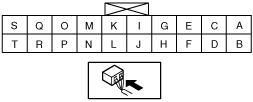
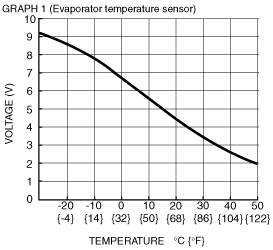
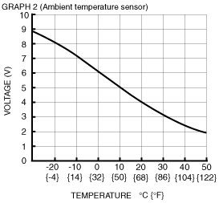
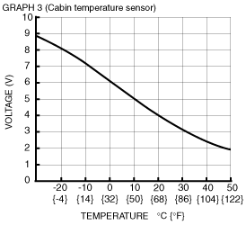

Workshop Manual ➭ HEATER, VENTILATION & AIR CONDITIONING ➭ CONTROL SYSTEM ➭ CLIMATE CONTROL UNIT INSPECTION [FULL-AUTO AIR CONDITIONER]
CLIMATE CONTROL UNIT INSPECTION [FULL-AUTO AIR CONDITIONER]
id0740008022a1
1. Turn the ignition switch to the ON position.
2. Connect the negative (-) lead of the tester to body ground.
3. By inserting the positive (+) lead of the tester into each climate control unit terminal, measure the voltage according to the terminal voltage table.
• If there is any malfunction, inspect the parts under “Inspection item (s)”.
― If the parts under “Inspection item (s)” are found to be normal, replace the climate control unit.
Terminal Voltage Table (Reference)
|
 e5u740zw5103 |
|
Terminal |
Signal name |
Connected to |
Measurement condition |
Voltage (V) |
Inspection item (s) |
|---|---|---|---|---|---|
|
A |
IG2 |
A/C 7.5 A fuse |
IG SW ON |
B+ |
• Wiring harness: continuity, short circuit (Climate control unit— fuse: A—A/C 7.5 A) • A/C 7.5 A fuse |
|
IG SW LOCK |
1.0 or less |
• Wiring harness: continuity, short circuit (Climate control unit— fuse: A—A/C 7.5 A) |
|||
|
B |
B+ |
ROOM 15 A fuse |
Under any condition |
B+ |
• Wiring harness: continuity, short circuit (Climate control unit— fuse: B—ROOM 15 A) • ROOM 15 A fuse |
|
C |
Blower fan speed control |
Power MOS FET |
Fan stopped |
1.0 or less |
• Wiring harness: continuity, short circuit (Climate control unit—power MOS FET: C—C) • Power MOS FET |
|
Fan: manual 1 (LO) —24 |
2.7—3.4 |
||||
|
Fan: manual 25 (HI) |
9.6 |
||||
|
D |
TNS signal |
TNS relay |
Headlight switch OFF |
1.0 or less |
• Wiring harness: short circuit (Climate control unit—TNS relay: D—D) • TNS relay • Headlight switch |
|
Headlight switch ON |
B+ |
• Wiring harness: continuity, short circuit (Climate control unit—TNS relay: D—D) • TNS relay • Headlight switch |
|||
|
E |
Blower motor feedback |
Power MOS FET |
Fan stopped |
B+ |
1. Wiring harness: continuity, short circuit (Climate control unit—power MOS FET: E—B) 2. Power MOS FET 3. Blower motor 4. Blower relay 5. HEATER 40 A fuse 6. Power MOS FET replacement |
|
Fan: manual LO |
8.17 |
||||
|
Fan: manual HI |
0.6 |
||||
|
F |
Panel control signal |
Instrument cluster |
Headlight switch OFF |
0 |
• Wiring harness: continuity (Climate control unit—instrument cluster: F—1F) • Instrument cluster • Climate control unit: terminal voltage (D) |
|
Headlight switch ON |
2.7 |
• Wiring harness: short circuit (Climate control unit—instrument cluster: F—1F) |
|||
|
G |
Actuator power |
• Air intake actuator • Air mix actuator • Airflow mode actuator |
IG SW ON |
B+ |
• Wiring harness: continuity,short circuit (Climate control unit— air intake actuator, air mix actuator, air flow mode actuator: G—A, A, A) • Air intake actuator • Air mix actuator • Airflow mode actuator |
|
IG SW LOCK |
1.0 or less |
||||
|
H |
GND |
Body ground |
Under any condition |
1.0 or less |
• Wiring harness: continuity (Climate control unit—GND: H—GND) |
|
I |
Plus Signal |
— |
— |
— |
— |
|
J |
— |
— |
— |
— |
— |
|
K |
A/C |
Refrigerant pressure switch |
A/C switch ON, fan switch at 1st |
1.0 or less |
• Wiring harness: short circuit (Climate control unit—refrigerant pressure switch: K—A) |
|
A/C switch OFF |
B+ |
• Wiring harness: continuity, short circuit (Climate control unit—refrigerant pressure switch: K—A) (Refrigerant pressure switch—PCM: C—1J ) • Refrigerant pressure switch • PCM: terminal voltage (1J) |
|||
|
L |
Vehicle speed |
— |
— |
— |
— |
|
M |
Evaporator temperature sensor input |
Evaporator temperature sensor |
Compared with temperature detected by evaporator temperature sensor |
Refer to graph 1 |
• Wiring harness: continuity (Climate control unit—evaporator temperature sensor: M—B, S—A) • Wiring harness: short circuit (Climate control unit—evaporator temperature sensor: M—B) • Evaporator temperature sensor |
|
N |
Rear window defroster operation |
Rear window defroster relay |
Rear window defroster switch OFF |
B+ |
• Wiring harness: continuity, short circuit (Climate control unit—rear window defroster relay: N—E) • Rear window defroster relay |
|
Rear window defroster switch ON |
1.0 or less |
||||
|
O |
Cabin temperature sensor input |
Cabin temperature sensor |
Compared with temperature detected by cabin temperature sensor |
Refer to graph 3 |
• Wiring harness: continuity (Climate control unit—cabin temperature sensor: O—B, S—A) • Wiring harness: short circuit (Climate control unit—cabin temperature sensor: O—B) • Cabin temperature sensor |
|
Q |
Solar radiation sensor input |
Solar radiation sensor |
Incandescent light (60W) shining on solar radiation sensor from distance of approx. 100mm {3.9 in} |
4.7 |
• Inspect for continuity or short circuit (Climate control unit—solar radiation sensor: Q—B, S—A) • Wiring harness: short circuit (Climate control unit—cabin temperature sensor: Q—B) • Inspect solar radiation sensor |
|
Light to solar radiation sensor block |
Below 1.0 |
||||
|
R |
Water temperature sensor input |
— |
— |
— |
— |
|
S |
Sensor GND |
• Ambient temperature sensor • Cabin temperature sensor • Evaporator temperature sensor • Solar radiation sensor |
Under any condition |
1.0 or less |
• Wiring harness: continuity (Climate control unit—GND: S—GND) |
|
T |
Ambient temperature sensor input |
Ambient temperature sensor |
Compared with temperature detected by ambient temperature sensor |
Refer to graph 2 |
• Wiring harness: continuity (Climate control unit—ambient temperature sensor: T—B, S—A) • Wiring harness: short circuit (Climate control unit—ambient temperature sensor: T—B) • Ambient temperature sensor |
|
 |
 |
|---|---|
|
 |
— |